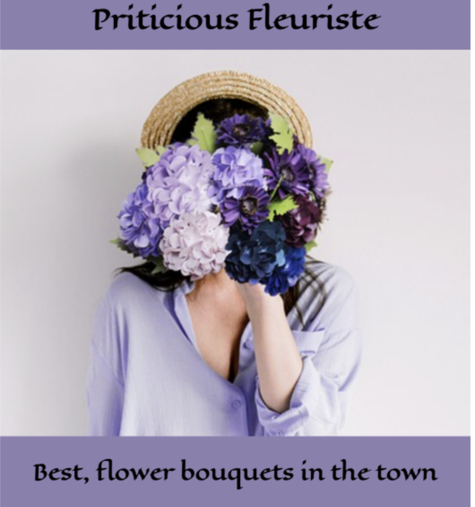

Jan 27th, 2023
Friday Content Nuggets
Hey there! I'm glad you're here. This post is all about why I started blogging and my journey to becoming a professional writer. I've always loved writing, ever since I was a little kid. I would make up stories and write them down, and I was always the one in my class who loved writing essays. But it wasn’t until a few years ago that I realized I could turn my passion for writing into a career. That's when I started blogging.

Why I Started Blogging: My Journey To Becoming A Professional Writer
At first, it was just a hobby - something I did for fun in my spare time. But the more I did it, the more I realized how much I loved it. I started to see blogging as a way to connect with people and share my thoughts and ideas. And slowly but surely, it became my dream to turn my blog into a full-time business. These days, I'm happy to say that I'm well on my way to achieving that goal. In the past year, I've made significant progress. As full time bloggers launch out for more information every day, they constantly create and publish value-filled content in different formats (blog posts, podcast, videos, pdf, etc). Creating content is one thing. Getting it to the consumers is another thing. Professional bloggers have different content promotion channels. What makes them strong is how much they can get their content out and create a responsive community.
Recent articles

Jan 27th, 2023
Gratitude.daily - Online Demo
Making a sweet little corner for daily gratitude. If you don't find what to be grateful for, this app might help you find some good prompt.

Jan 20th, 2023
Order some flowers - Online Demo
HTML,CSS and JS one page demo app to order some fresh flowers for your dear one.

Jan 13th, 2023
dreamlike.art - Product page - Online Demo
Responsive product page in pure CSS and HTML. I considering myself as artist by heart and love creating generative AI arts.